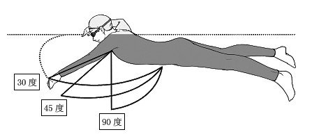
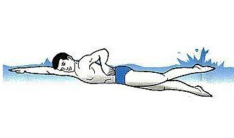
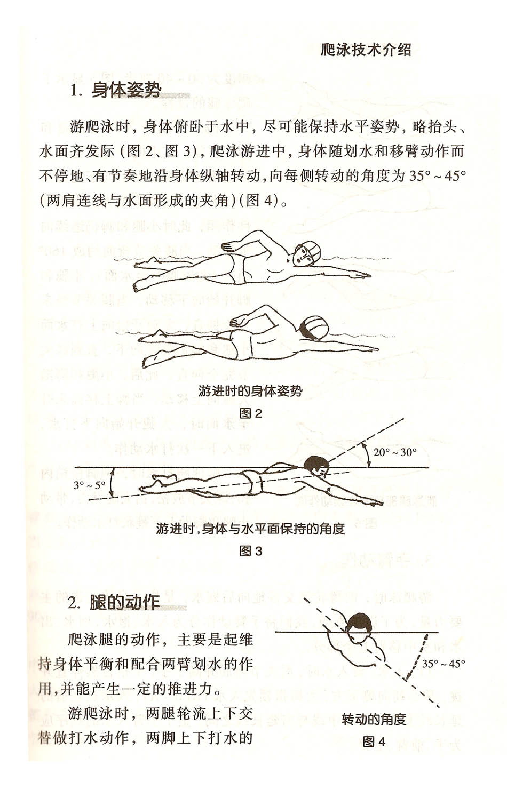
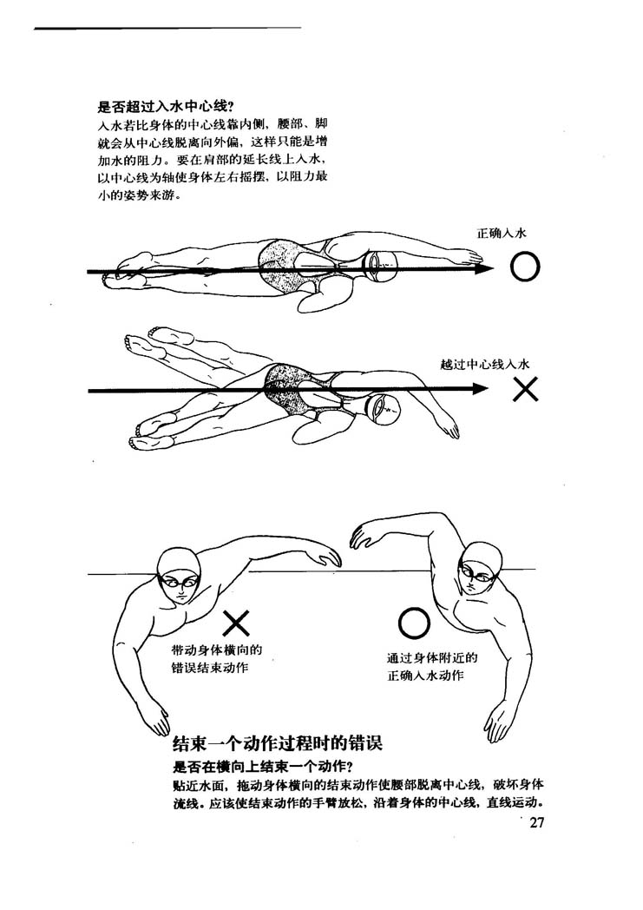
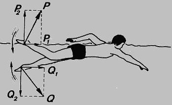
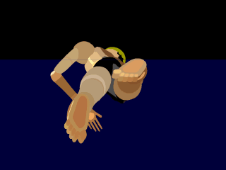
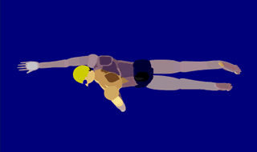
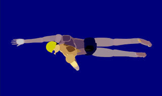
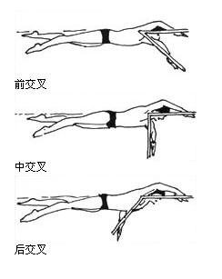
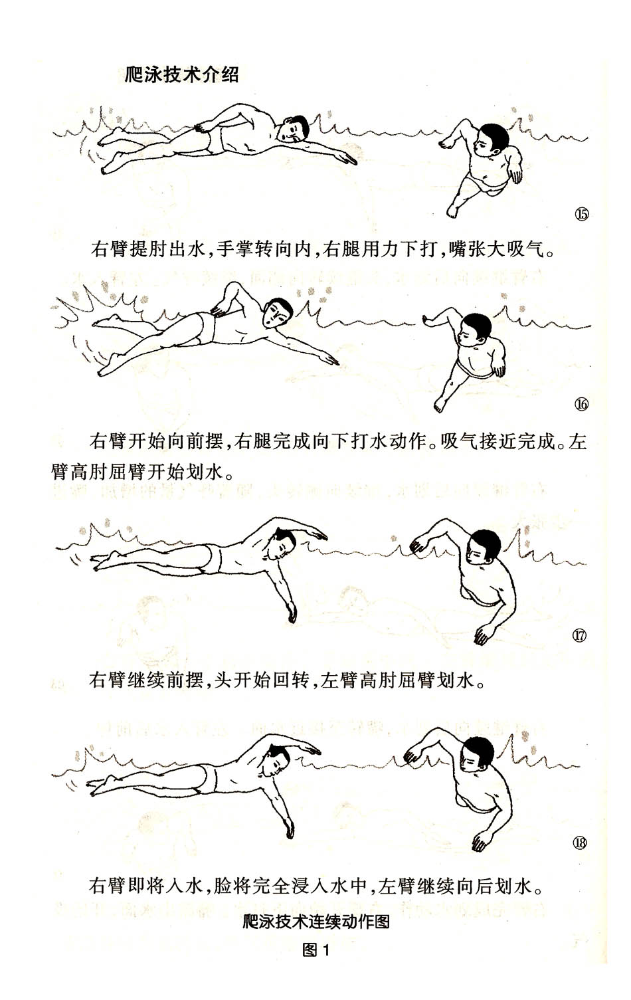

自由泳
- 自由泳呼吸技术的专家最完整论述: http://tieba.baidu.com/p/2685907671
- 自由泳身体相关的伸展练习和打腿练习方法: http://tieba.baidu.com/p/2729379831
- 我的腰间盘突出和游泳: http://tieba.baidu.com/p/2711619937
- 影响我游泳的20句话（自由泳）: http://tieba.baidu.com/p/2967368634
- 教你学习自由泳，唤醒我们健康快乐: http://tieba.baidu.com/p/3172210886
- 游泳GIF及视频集合: http://tieba.baidu.com/p/3380547145
- 自由泳动作要领图解及呼吸技巧: http://jingyan.baidu.com/article/414eccf61703c66b431f0af8.html
- 爬泳技术介绍-手和腿的配合技术: http://www.sanhe-swim.com/news_n55.asp?id=76
- 游泳技术汇总:http://hi.baidu.com/macchinetta/item/b37038354e5b679ab80c03bf
自由泳是全身运动，任何一个部位的活动都离不开全身的协调配合。从表面上看，自由泳依靠划水和打腿产生推进力，实际上，躯干的作用也不能忽视。首先，躯干应保持一定的紧张度，腰部如果松软，整个人就像一摊泥一样。其次，身体的转动能够有效地发挥躯干部大肌肉群的力量，减少阻力，提高工作效果。
自由泳想要游泳游好，第一要把浮手打腿练好，就是把手伸直，把头闷在水里打腿，接着你可以试着在要换气的时候，两边换气，多练习练习，再来把手上的动作也加上，一个膀子一个膀子的练习，千万不能急. 要游好自由泳，一定要把握好自身的协调性.....
自由泳的完整配合有多种形式。一般常见的是每划水2次，打水6次，呼吸1次。
身体姿势
自由泳时身体俯卧在水面成流线型，背部和臀部的肌肉保持适当的紧张度，在游进中保持头部平稳，躯干围绕身体纵轴有节奏的自然转动35゜~45゜。
 


腿部鞭状打水
自由泳腿部动作虽有一定的推进力，但主要起平衡作用，保持身体的稳定和协调双臂做有力地划水。
- 打腿动作要求两腿自然并拢，脚稍内旋，放松脚踝，以髋关节为轴，由大腿带动小腿和脚掌，两腿交替做鞭打动作。
- 向上打水腿从直到弯。以直腿开始向上打，脚接近水面时屈膝，小腿上抬，使脚牚露出水面后向下打水(开始可直腿打水，但腿略放松，不要僵硬，在水的压力下腿会自然弯曲)。
- 向下打水前膝关节弯曲角度约130-160度，打水幅度约为30-40厘米(两脚尖上下幅度)。
- 打水时要绷脚（芭蕾脚），不要勾脚。
 
手臂动作
自由泳是臂部动作是推动身体前进的主要动力。一个周期分为入水、抱水、划水、出水和空中移臂几个不可分割的阶段。
 

手臂动作过程
- 手的入水点在肩的延长线和身体中线之间，以大拇指领先，斜插入水。
- 入水后，手、肘、肩继续前伸，使手臂伸展。随着身体的转动，屈腕、屈肘，手臂向外、后方抓水；手下划到最低点后，旋转手臂向内、上、后方划水，保持高肘屈臂的划水姿势。
- 手臂与水平面垂直时，经手领先，加速推水，手臂转为向外、向上和身后划水直到大腿侧，提肘出水。
- 出水后，手臂自然、放松地经空中向前移臂，保持高肘姿势。然后手在肩前领先入水，开始下一个动作。
手臂动作练习
- 手臂在水下成曲线划水路线，从侧面看，手相对于身体的划水轨迹为“S”形。
- 自由泳两臂配合有前交叉配合、中交叉配合、和后交叉配合3种基本形式。本图为前交叉形式，为初学者比较容易掌握的方式。
- 单臂打水划臂动作是初学者应该重点练习的动作。如此图，左臂划水，那么可以右臂扶板。一般腿打水10产次左右，手臂划水一次。掌握到一定程度的时候可以加上呼吸练习。具体组数以及练习方法，我们会在教学中详细介绍。

当恢复手臂入水时：
- 若划动手臂还在头前面两臂夹角约30度为前交叉；
- 若划动手臂处于肩线两臂夹角约90度, 即为中交叉；
- 若划动手臂处于肩线以后两臂夹角约150度，则为后交叉。
前交叉是比较容易学和掌握的，一般的初学者都是采用前交叉配合游，比较适合初学者采用。但是前交叉因一臂空中移臂和入水时，划水臂尚未进入最有效的划水阶段，在这个两臂都不产生推进力的空隙，游进速度将会下降，影响速度的均匀性，前交叉技术在自由泳中长距离中具有优越性。需要强大的上肢力量与频率配合，技术性强，前交叉靠的是技术。索普、孙阳均采用此技术。
中交叉可以不断地产生推进力，可以保持身体均匀速度前进。但频率高，耗能大，中交叉靠的是频率。适合短距离专业选手采用。
后交叉稳定性比前两种要好，可以连续地产生推进力，对保持流线型整体滚动，节省体力，提高游进速度很有帮助，适合业余选手采用。
学术界目前对于这三种技术均有不同见解。
手臂动作要领
- 入水
完成空中移臂后，手在控制下自然放松入水。手的入水点一般在身体纵轴和肩关节的前后延长线之间。入水时手指自然伸直并拢，臂内旋使肘关节抬高处于最高点，掌手斜向外下方，使手指首先触水，然后是小臂，最后是大臂自然插入水中。
臂入水时，肘关节略屈，并高于手臂，手指自然伸直并拢，向前斜下方且插入水。注意手掌向外，动作自然放松。手入水的位置应在肩的延长线上，或在身体的中线和肩的延长线之间。入水的顺序为：手——小臂——大臂。手切入水后，手和小臂继续向前下方伸展，手由向前——向下——稍有向内的运动变为向前——向下——稍向外的运动。
- 抱水
臂入水后，在积极向下方插入的过程中，手掌从向斜外下方转向斜内后方并开始屈腕、屈肘，肘高于手，以便能迅速过渡到较好的划水位置。抱水结束，手掌已经接近对水，肘关节屈至150゜左右，整个手臂像抱着一个大圆球似的为划水作准备。
臂入水后，应积极插向前下方，此时小臂和大臂应积极外旋，并屈腕、屈肘。在形成抱水的动作中，开始手臂是直的，当手臂划下至与水平面约成15-20度角时，应逐渐屈肘，使肘关节高于手。在划水开始前，也就是手臂约与水面成40度角时，肘关节屈至150度左右。抱水动作主要是为了划水做准备，因此她是相对放松和缓慢的。抱水就好像用臂去抱一个大圆球一样。抱水时，手的运动为向后——向下——向外的三个分运动组成。
- 划水
划水是发挥最大推进作用的主要阶段，其动作过程可分为拉水和推水两个部分。紧接抱水阶段进入拉水，这时要保持抬肘，并使大臂内旋。同时继续屈肘，使手的动作迅速赶上身体的前进速度，能使水动作造成合理的动作方向呼路线，同时，也使主要肌肉群在良好的工作条件下进入推水动作，拉水至肩的垂直平面后，即进入推水部分，这时肘的屈度约100゜左右。大臂在保持内旋姿势，带动小臂，用力向后推水。同时，使肩部后移，以加长有效的划水路线。向后推水有一个从屈臂到伸臂的加速过程，手掌从内向上，从下向上的动作路线加速划至大腿旁。整个划水动作，手的轨迹始于肩前，继之到腹下，最后到大腿旁，呈s形。
- 出水
划水结束时，掌心转向大腿，出水时小指向上，手臂放松，微屈肘。由上臂带动，肘部向外上方提拉带前臂和手出水面，掌心转向后上方。出水动作必须迅速而不停顿，同时应该柔和、放松。
- 空中移臂
紧接出水不停顿地进入空中移臂，移臂时，肘高于手。
- 两臂配合
自由泳时两臂划水发生的交叉位置有前交叉、中交叉和后交叉三种类型。
前交叉是指一臂入水时，另一臂已前摆至肩前方与平面成30゜左右。前交叉有利于初学者掌握自由泳动作和呼吸。
中交叉是指一臂入水时，另一臂处在向内划水阶段与水平面成90゜。
后交叉是指一臂入水时，另一臂划至腹下，手与水平面成150゜左右。
臂、腿和呼吸和配合
自由泳时，一般是在两臂各划水一次的过程中进行一次呼吸，以向右边吸气为例：
右手入水后，嘴和鼻开始慢慢呼气。右臂划水至肩下，开始向右侧转头和增大呼气量。右臂推水即将结束，则用力呼气。右臂出水时，张嘴吸气，至空中移臂的前半部为止，并开始转头还原。
然后，直至臂入水结束，有一个短暂的闭气过程，脸部转向前下。头部稳定时，右臂入水，再开始下一慢慢呼气的过程。
自由泳的呼吸与臂、腿配合，初学者一般者采6：2：1的方法，即呼吸一次、臂划两次、腿打6次，这种配合方法易保持平衡和协调掌握自由泳技术。

自由泳腿部练习
-
水中俯卧打水练习：俯卧池边，做两髋展开、大腿带动小腿的打水练习。重点：打水时保持膝、踝关节的柔软、屈膝角度及脚踝的变化。
- 爬泳腿的重点是以髋为轴，学习的难点是大腿带动小腿，交替协调的鞭状动作。
- 做直腿打水有助于体会大腿带动小腿的动作，不要急于过渡到屈腿打水。
- 打水髋关节要展开，踝关节要放松。
- 爬泳打腿练习枯燥易累，宜多变换方式和方法。如陆上坐、卧交替；扶边打水快、慢交替；漂浮打水可单、双臂在前与双臂在后交替练习。随着打水距离的增长，要与呼吸结合。
- 打水的幅度约30～40公分，脚背贴着水面往下压即可，两腿交替协调，力量要平均，幅度不要过大。保持膝、踝关节的柔软。抬腿的幅度不要太高，脚背贴着水面即可，不要屈膝离水太高。
-
常见错误动作和纠正方法：
- 大腿不动，屈膝过大，用小腿打水－－原因是打腿动作概念不清，小腿过分用力。练习时可用直腿打水矫正，体会大腿带动小腿的动作，同时应注意观察正确的示范动作。
- 屈膝打水－－原因是躯干未充分展开或收腹。水中练习时，注意大腿上摆。陆上练习时可俯卧凳上，做直腿打水练习，注意上抬大腿的动作，膝部不触凳。
- 打水时前后抖动－－原因是打腿动作概念不清，两脚像踩脚踏车似的前后踩水。练习时可用直腿打水矫正，腿是上下摆动而不是前后抖动。
- 勾脚尖打水－－原因是动作过分紧张或踝关节灵活性差。可多做踝关节灵活性练习，打腿时要求绷直脚尖。